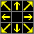
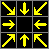
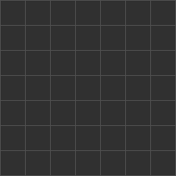
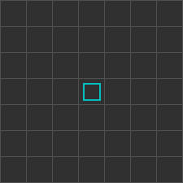
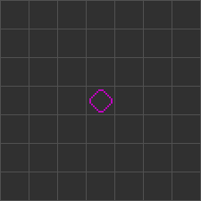
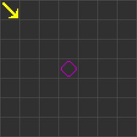
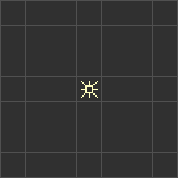
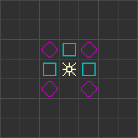

these are the 9 vector states; 0-8.
It is useful to imagine the states layed out as such.:
|  |
|
|
The Vectors represent a force which it applies to the neighbour cell in that direction.
E.g. Vector state 1 (which we also call the North Western Vector) will apply a North Western force to its North Western neighbour next generation.
Similarly, Vector state 2 (which we also call the North Vector) will apply a North force to its North Neighbour next step. etc...
As this is a cellular Automaton, we determine a cells state using its neighbourhood,
rather than set the state of a neighbour given the center state. So we do the above-described in reserve.

We essentially figure out, if the neighbours apply forces to the center cell.
E.g. if our north western neighbour is a south-east vector. (when we visit the other stategroups you'll see that it's not just Vectors that can apply these forces).

Vectors may combine into new Vectors if multiple Vectors meet.
The resultant forces are then calculated and the corresponding vector-state is found.
The vectors are clamped to values of -1, 0, 1 on each axis to determine its direction and finally its (1 of 9 possible) states.
I call the axes the N-axis and E-axis to not confuse which direction on a XY coordinate system makes for increasing or decreasing values along that axis.
Because of the clamping of values, these axes can be considered a finite size,
having a point on the axis either Positive, Neutral, or Negative
Therefore a cell whose south eastern neighbour has a north western Vector (+N, -E),
and a southern neighbour with a northern Vector (+N, øE),
will still result in a north western vector (+N + +N = +N, -E + øE = -E).
The square has three possible states. still, rising, and falling. The last two states are
activated forms of the square. When activated, it will both light up and A diagonal line will appear across it.
That diagonal line may either go from buttom-left to top-right (rising if read from left to right). or top-left
to buttom-right (falling, if read from left to right).
The line ends in each of the two corners the square "will shoot arrows out of".
and it is activated by having 1 and only one incoming vector on either of its four corners (diagonally adjecent neighbour-cells).

The square's edges does not influence the state of it nor can it change cells next to its edges.
It is therefore a very efficient way of blocking arrow paths which we will use extensively in later examples,
along side the diamond with very similar properties.
The diamond too has three possible states. still, flat, erect. The last two states are too activation states.
It too will light up and get either a horizontal (flat) or vertical (erect) line across.
The lines too represent the directions in which it "will shoot arrows out". It too is activated when 1 and only 1
path is recieved from either of its four corners (the cell's neighbours that it shares an edge with).
Similar, right?
I'll share two more gifs that are 45 degree equivalents of the squares two examples.


The beamer "shoots out arrows in all directions". Not much more than that. You can force a beamer to essentially only
beam out in one direction, if you block off all other 7 paths with squares and diamonds as needed


Well, I put my lies in quotation marks, so I hinted it wasn't the full story.
So here's the very most formal explaination you'll get:
As for when I explained how we needed to think of the vectors applying forces to a center cell,
rather than a center cell "setting" the state of neighbouring cells, we need to apply that same logic to squares, diamonds, and beamers.
Just like The North-Western Vector may apply a force to the center cell, if and only if that Vector is in the South-Eastern cell, and
The North Vectr may apply a force to the center cell, if and only that Vector is in the Southern cell. Then: